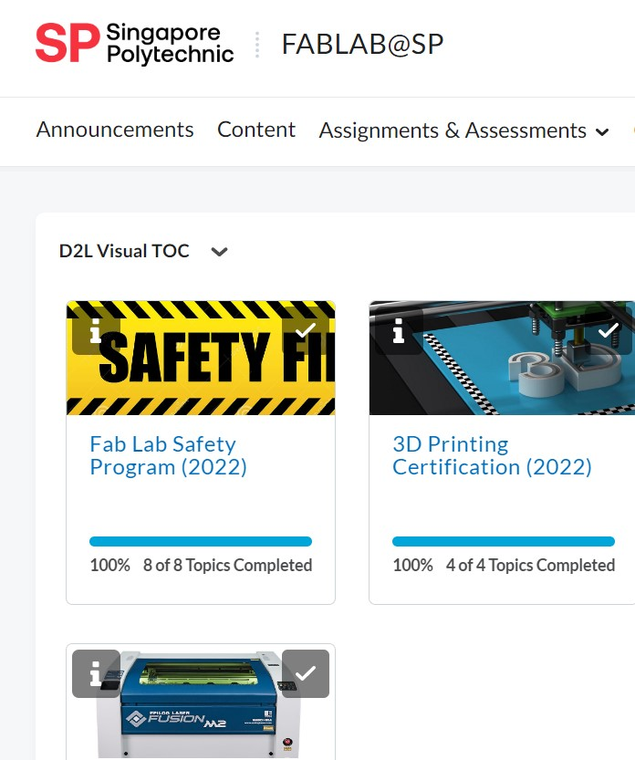
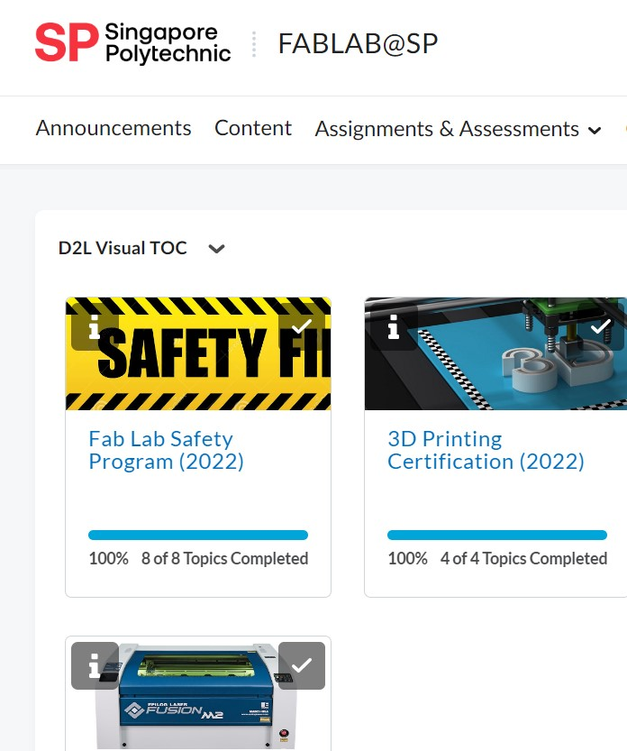

3D Modeling & 3D Printing
3D Printing Introduction
- 3D printing is a process of creating three-dimensional objects by depositing or solidifying material layer by layer based on a digital model.
- It is also known as additive manufacturing.
- The process begins with the creation of a 3D model using computer-aided design (CAD) software or through 3D scanning.
- The 3D model is then sliced into thin layers, and the 3D printer adds material one layer at a time until the object is complete.
- The material used for 3D printing can vary like:
- The most common types of 3D printers are:
- Fused Deposition Modeling (FDM)
- Stereolithography (SLA)
- Selective Laser Sintering (SLS)
- Before we can do 3D printing:
- We have to go book online lesson in flms and do it online in brightspace.
- We have to do the quiz after the lesson and score 80 and above so that we will be able to utilize the 3D printers.
- After that points will be given to us to allow us to utilize the 3D printers so we have to book in flms before going there.
 

Assignment 1: Chess piece
Let's make a Chess piece!
- Using all the 3d Modeling techniques, design a chess piece is easy. As using canva by insert the image online and adjust the position, create sketch, drawing the profile and swwitch off canvas and revolve it.
- Base: 30mm, Height: 50mm, Head thickness: 5mm
- The base should be hollow
- Step by step video of how I do it:
- Final created design in Fusion 360:
- Not only we get to design, we also get to print out our chess piece.
- Save to stl.file --> Go to CURA and insert the file --> Do all the infill, support, rotation and adhesion --> Save to a thumbdrive --> and insert the thumbdrive to the 3d printer
- A short video of using the Ultimaker S3 in my lab:
Assignment 2: Handphone Stand
Let's make a Handphone Stand!
- Using all the 3d Modeling techniques, designing a handphone stand was quite easy. As uses sketches and lines to traced out a stand to be able to withstand the weight and height of the hadnphone in both vertical and horizontal way. I also uses canva by insert the logo image online and adjust the position, create sketch, drawing the profile and swwitch off canvas and extrude/intrude it.
- Step by step video of how I do it:
- Final created design in Fusion 360:
- Not only we get to design, we also get to print out our handphonestand.
- Save to stl.file --> Go to CURA and insert the file --> Do all the infill, support, rotation and adhesion --> Save to a thumbdrive --> and insert the thumbdrive to the 3d printer
- I used the Ultimaker S3 in my lab but however I did not manage to video it so this is the final product